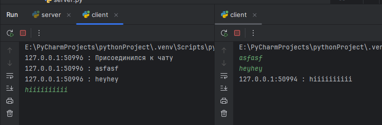

Задание 4
Описание
Реализовать многопользовательский чат.
Стек
- Язык: Python
- Библиотека: socket
- Протокол: TCP
Как запускать
- Сервер:
bash python3 server.py - Клиент:
bash python3 client.py
Код
client.py
import socket
import threading
class MessageReceiverThread(threading.Thread):
def __init__(self, connection_sock: socket.socket):
super().__init__()
self.connection_sock = connection_sock
self.is_server_closed = False
def run(self) -> None:
while not terminate_threads and not self.is_server_closed:
try:
data = self.connection_sock.recv(1024)
if not data:
print(
"Соединение закрыто сервером. "
)
self.is_server_closed = True
break
print(data.decode())
except socket.timeout:
continue
client_conn = socket.socket(socket.AF_INET, socket.SOCK_STREAM)
client_conn.connect(("127.0.0.1", 8080))
client_conn.settimeout(1)
terminate_threads = False
receiver_thread = MessageReceiverThread(client_conn)
receiver_thread.start()
try:
while True:
if receiver_thread.is_server_closed:
break
try:
user_input = input()
client_conn.sendall(user_input.encode())
except KeyboardInterrupt:
print("Вы покинули чат.")
break
except KeyboardInterrupt:
print("Вы покинули чат.")
finally:
terminate_threads = True
receiver_thread.join()
client_conn.close()
server.py
import socket
import threading
class Connection:
def __init__(self, sock: socket.socket, addr: tuple[str, int]):
self.sock = sock
self.addr = addr
self.sock.settimeout(1)
self.is_disconnected = False
class HandlerThread(threading.Thread):
def __init__(self, connection: Connection, lock: threading.Lock):
super().__init__()
self.connection = connection
self.stop_event = threading.Event()
self.lock = lock
def run(self) -> None:
self.notify_all("Присоединился к чату")
while not self.stop_event.is_set():
if self.connection.is_disconnected:
break
try:
msg = self.connection.sock.recv(1024).decode()
if not msg:
self.remove_connection()
break
else:
self.notify_all(msg)
except socket.timeout:
pass
except OSError:
break
except ConnectionResetError:
self.remove_connection()
break
def remove_connection(self):
self.connection.is_disconnected = True
self.notify_all("Покинул чат")
self.lock.acquire()
try:
active_connections.remove(self.connection)
finally:
self.lock.release()
self.connection.sock.close()
self.stop_event.set()
def notify_all(self, msg: str) -> None:
self.lock.acquire()
try:
other_connections = active_connections[:]
finally:
self.lock.release()
for conn in other_connections:
if conn != self.connection:
try:
conn.sock.send(
f"{self.connection.addr[0]}:{self.connection.addr[1]} : "
f"{msg}".encode()
)
except socket.timeout:
pass
server = socket.socket(socket.AF_INET, socket.SOCK_STREAM)
server.bind(("127.0.0.1", 8080))
server.listen(10)
server.settimeout(1)
active_connections = []
lock = threading.Lock()
try:
while True:
try:
sock, addr = server.accept()
conn = Connection(sock, addr)
lock.acquire()
try:
active_connections.append(conn)
finally:
lock.release()
handler_thread = HandlerThread(conn, lock)
handler_thread.start()
except socket.timeout:
pass
except KeyboardInterrupt:
for conn in active_connections:
conn.is_disconnected = True
conn.sock.close()
server.close()
Скриншоты
